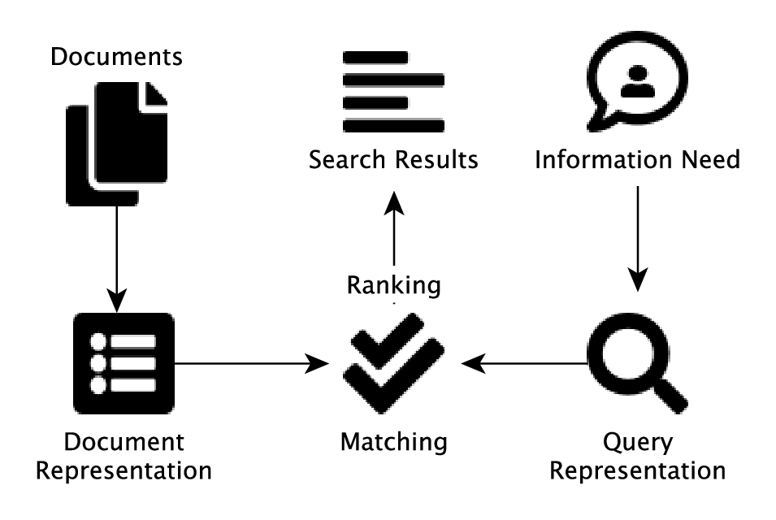
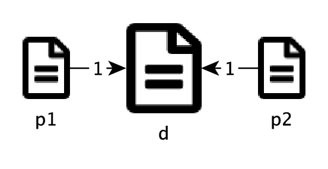
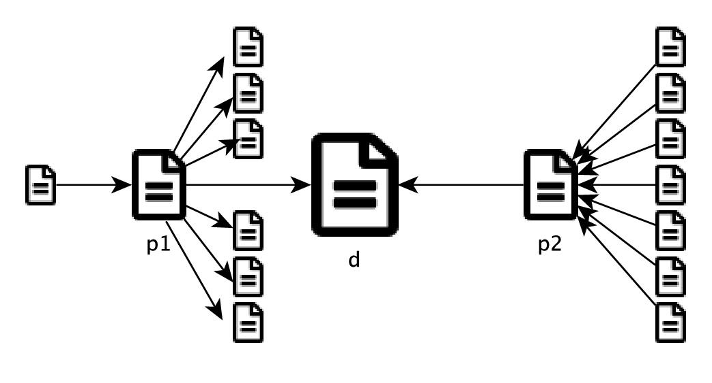

12 Search and Retrieval
Ask, and it shall be given you; seek, and you shall find; knock, and it shall be opened to you.
The Gospel of Matthew
We are in constant pursuit of information, knowledge, and truth. We have questions and we ask. Today, we ask questions and seek information with the help of technologies. We search for information and web pages by Googling. We pose questions to digital assistants such as Amazon’s Alexa. Regardless of differences in the specifics, the essence of these interactions is to find the right (relevant) piece of information that can satisfy us (the user) – be it a web page, a short answer, a prediction or some kind of recommendation.
This is about search and the general area of research is commonly referred to as Information Retrieval. In 1951 – when searches for information were primarily conducted in the libraries with the assistance of reference librarians without a computer – Calvin Mooers coined the term Information Retrieval as "the investigation of information description and specification for search and techniques for search operations."(Mooers 1951) A library catalog with index cards was the state of the art to help people seek and find quickly.
With the support of computers, we can perform the same type of search tasks even more efficiently, yet with ease on the user’s side and sophistication on the system’s side. Now that computers are essential to the various search systems we have in place, the notion of Information Retrieval (IR) may be redefined, in a narrower sense, as:(Manning et al. 2008)
finding material (usually documents) of an unstructured nature (usually text) that satisfies an information need from within large collections (usually stored on computers)
With this narrower definition, a basic task of IR is, given a user query, to find relevant documents from a collection of text materials. Traditionally, the data collection such as a library of books is assumed to be static, and certain pre-computation and indexing can be conducted before querying processing. In reality, this assumption does rarely hold as data can grow to include new materials which in turn should be incorporated into the index.
Web search engines are Information Retrieval (IR) systems and the Web is a huge collection of data that constantly grow and change. The magnitude, dynamics, and decentralization of data on the Web pose great challenges, which have led to waves of innovation on Web IR1. We will discuss some of these challenges and related ideas later in the chapter.
12.1 Basic Paradigm
In information retrieval, the basic problem is to search and find matched documents against a query representation based on a user’s information need. Documents need to be stored in proper representation so that related matches can be computed (numerically). An index is also necessary to conduct the matching process timely.
As shown in Figure 12.1, the user with an information need issues a query to the retrieval system, which in turn match it against the document representation in the store to identify relevant documents in the search result. The result can also be ranked (sorted) in terms of predicted relevance of each document.

The notion of relevance is key in information retrieval research. Yet it remains one of the least understood concepts in the field. Whether a piece of information is relevant depends on many factors such as the user’s objectives and the context of the current task. Sometimes, these may be difficult for the user to articulate; and even if she does, the query expression thus constructed may hardly be precise.
Retrieval systems have to attack the issue of uncertainty often associated with understanding the user’s need and what is truly relevant in context. We can factor this in when building a retrieval model. With probabilistic models, for example, the degree of uncertainty can be quantified for proper probabilistic ranking in light of probability and information theories.
However, uncertainty is often due to lack of information (data) and requires further data collection. Techniques that support relevance feedback and interactive, exploratory searching may help engage the user in order to understand more precisely what she is looking for.
12.2 Indexing
For now, let’s assume the basic model presented in Figure 12.1 and walk through some of the major ideas for finding matched (and potentially relevant) documents.
In Figure 12.1, the data collection can be very large with a great number of documents, e.g. a library of a million books. In order to conduct searches with matching and ranking responsively, some amount of data pre-processing is necessary. This is also practically sensible if the collection is relatively static (no dramatic changes frequently).
In chapter , we discuss basic processes for text vectorization. The result of vectorizing a text collection can be represented by a matrix with documents as rows and terms as columns. Each document here is a vector of values corresponding to terms in the dictionary. These values can be obtained using methods such as binary, term frequency (TF), or TF*IDF term weighting scheme.
Assume we start with the binary representation, which is very simple with \(0\)s and \(1\)s, for a collection of \(1,000\) documents each containing a dozen words. In terms of the Heaps’ law, we probably obtain somewhere close to \(1,000\) unique terms, leading to a large matrix in the order of million values. With an even larger collection, the entire matrix representation can become too expensive to be stored and computed.2
Now if we examine actual values of each document (row) in the matrix, we will quickly realize that most values are \(0\) (zero). This is due to the fact that even though we have a larger number of unique terms in the entire collection – thus many columns in the matrix – each document (row) only contains a small number of these terms. So instead of storing the entire matrix with all values, we can use a Sparse Matrix representation where only non-zero values are stored.
On the document level, this means each document is a Sparse Vector that only stores data about what terms actually appear in it. With the sparse representation, we can significantly reduce the amount of storage needed for document representation (i.e. better space efficiency).
However, the use of sparse vectors does not necessarily address the issue of query processing efficiency. That is, even with document sparse vectors, it still requires lots of computational effort on the system side to sift through all documents to find matches for a query. The amount of time to perform this matching task increases linearly with the increasing number of the documents. For searching a very large data collection such as the Web, this will become too slow to serve users on the fly.
Efficient query processing requires a better data structure that supports: 1) fast lookup of individual query terms with their associated documents, and 2) fast merging of all terms in the query expression. The 1st objective can be achieved if the terms are sorted where a binary search can be performed. Each of the terms on the sorted list can then point to the list of documents (using their IDs) containing it. We refer to such a sorted structure of terms with references to documents as an Inverted Index. Each term is now a vector of document IDs, inverted from the original document vectors of terms.
When presented with a single-term query, the system can conduct a binary search to quickly identify all documents matching (containing) the term from the inverted index. With a query expression of multiple terms, each term can be looked up in the same manner.
But how can we merge documents associated with the individual terms to find out which documents actually satisfy the entire query, where, either explicitly or implicitly, terms are used in a logical context with AND, OR, and/or NOT?
To achieve the 2nd objective of fast merging, documents for each term in the inverted index should also be sorted (by their IDs). So in the end when an inverted index is built, all the terms will be sorted, each of which in turn contains a list of sorted document IDs. In the next section, we will look at a couple of methods to see how we can take advantage of the sorted lists to merge query terms for document-query matching.
12.3 Matching
One who is interested in reading about the U.S. revolution may issue a query "The Declaration of Independence" on a collection of historical artifacts to find that particular document. If we assume the system treats words the and of as stop-words, they will be disregarded in the query processing. In this case, the query has two terms, namely Declaration and Independence, which can be further interpreted as Declaration AND Independence assuming the user is looking for both terms.
Given an inverted index with a sorted list of all unique terms in the collection, it takes binary search logarithmic time to find each term’s entry. That is, given \(M\) terms in the index, the system makes \(O(\log{M})\) comparisons to find Declaration and Independence in the worse case. This is logarithmic time complexity is rather efficient and scalable. An example of the two term entries found in the inverted index may look like this:
We now refer to each term’s list of documents – in fact only their IDs – as the posting of the term. An inverted index is thus a collection of postings. After examining the two postings, we can conclude that documents \(\#2\), \(\#103\), and \(\#456\) in Figure 12.2 contain both terms. But how can an algorithm merge the two postings to identify these matched documents?
A very simple approach is to go through the documents IDs in the posting for term Declaration and, for each of them, we compare it with every document ID in the second posting for term Independence. Suppose the first posting has \(n_1\) documents and the second has \(n_2\), this will conduct \(n_1 \cdot n_2\) comparisons. This approach is going to be very slow with large postings and it has yet to take advantage of the sorting (pre-computation) that has been performed on the document IDs.
Apparently, we can improve on the above brute force method is by conducting a binary search on the second posting for each document on the first posting. In this case, the time complexity of the matching process will become \(O(n_1 \log n_2)\) as the binary search is of \(O(\log n_2)\) complexity. Assume \(n_2 > n_1\) is a large number, this will significantly reduce query processing time.
So far we have used one posting as the primary to iterate through and, in the process, compare each value there to those in the second posting. In this approach, the two postings play unequal roles in the matching process.
A different approach is to take the postings equally and iterate through them simultaneously. Assuming document IDs are sorted in the ascending order, we start at the beginning of each posting. In each step, we compare the current values of the two postings and the one with a small value will move to the next (greater) value. This continues until it has been found a value greater or equal to the current value of the other posting. In that case, we switch to the other posting to go next.
For the above example, we start at first document ID in each posting shown in Figure 12.3, where the Declaration posting has a value \(2\) and the Independence posting has \(1\) (see step 1 in the figure). As the one with a smaller document ID, the Independence posting will move to the next document ID, which is \(2\) and matches the the current value in Declaration (see step 2).
Now that the second posting (Independence) is already with an equal or greater document ID, the process will shift to the first posting (Declaration) to catch up, which, as shown in Figure 12.3 step 3, then goes to document \(\#3\) and switches the turn back as it surpasses \(2\). This process will continue until no more matches can possibly be found.
In the worse case scenario, it iterates through the two postings from start to end, which is \(O(n_1 + n_2)\) time complexity. Practically, this is better than the previous method with \(O(n_1 \log n_2)\) complexity where \(\log n_2\) may remain a large number (\(\gg 2\)).
These techniques are particularly useful to merge postings for logical AND, i.e. for document containing both or all query terms. They also work well with the OR query expressions, where documents containing any of the terms should be brought together after the removal of duplicate IDs.
The simultaneous iterative process can be further improved with skip pointers that the iterations faster by skipping a significant amount of document IDs in each posting. However, the skip pointers technique is of little use for OR queries as it skips documents that should be included with a logical OR.
12.4 Ranking
With techniques presented in the previous section, we know how to process a query with an inverted index and identify matched documents by merging postings for the query terms. This can be conducted rather efficiently if proper preprocessing is already in place, e.g. with sorting and skip pointers.
If the user can articulate her need for information with relevant query terms in a precise boolean expression, then the system should be able to serve the user’s need via matching. There is potentially a long list of documents that match the query. In the old days, this perhaps worked just fine for scholars who would like to find a list of research publications for a comprehensive literature review.
In the context of today’s World Wide Web and online social media, it will not be helpful by retrieving an extremely long list of pages and presenting them all at once to the user. For one, the query expression of any ordinary user is most likely imprecise and a lot of matched documents will turn out to be non-relevant.
More important, many information seekers on the web are not looking for comprehensive literature. Often they are in need of the one page, if not a few, that can satisfy their need or at least something they can start with. In these cases, the challenge is not about the thoroughness of the result, but how precise and relevant the result is.
The common practice of today’s web search engines is to present a ranked list of matched documents where, ideally, the most relevant documents will appear early on so the user can see them and follow with a clickthrough. So in addition to query matching, document ranking (sorting) in the retrieved result is essential for the success of a search engine.
12.4.1 Content-based Ranking
So in what order shall we rank documents or pages according to a query? Among the matched ones, what documents should be presented to the user early in the result?
As the key to information retrieval (IR) is relevance, the first reaction to the questions here is to rank documents according to how relevant they are to the query. But how do we quantify relevance? Without the user’s subjective feedback on what is relevant vs. what is not, there is simply no data to quantify relevance. The alternative is to assume that documents that match the user’s query expression to a higher degree are more relevant to her information need.
Based on this assumption, there are several approaches we can take. For example, using the Term Frequency (TF) scheme discussed in chapter , we can count the total number of query term occurrences in each document. The matching score of a document \(d\) with regard to query \(q\) can be therefore computed by:
\[\begin{aligned} score(q,d) & = & \sum_{t \in q \cap d} TF_{t,d} \end{aligned}\]
where \(t\) is each term appearing in both the query and the document, and \(TF_{t,d}\) is the term frequency of \(t\) in \(d\), i.e. the number of times it appears in the document.
Now one would argue that this scoring function will not work well as it give equal importance to each query term. With this method, one who issues a query like "the declaration" may retrieve a bunch of documents with lots of "the" in the writing (suppose "the" has not been removed as a stop-word from being indexed). We may therefore consider the relevance of individual terms by replacing the TF with TF-IDF weights (Term Frequency * Inverse Document Frequency):
\[\begin{aligned} score(q,d) % & = & \sum_{t \in q \cap d} w_{t,d} \\ & = & \sum_{t \in q \cap d} TF_{t,d} \cdot IDF_{t} \end{aligned}\]
where \(IDF_t\) is IDF weight of term \(t\).
Both TF and TF-IDF scoring functions above are dependent on the terms’ occurrences. Apparently, longer documents (e.g. books) are more likely to contain more instances of the same terms than the shorter documents. To remedy for this bias, one can normalize term frequency by the document length:
\[\begin{aligned} score(q,d) & = & \sum_{t \in q \cap d} \frac{TF_{t,d}}{L_d} \cdot IDF_{t} \end{aligned}\]
where \(L_d\) is the length of document \(d\), i.e. the number of terms in the documents including duplicates. Now that we factor in document length, short documents will have equal chances to be ranked and long documents will no longer dominate3. After all, for any document \(d\), \(\sum_t \frac{TF_{t,d}}{L_d} = 1\) regardless of its length. This is after the fact that the overall probability of any term drawn from the document is always \(1\).
The document-length-normalized TF is a a probability estimate. Imagine if we put all the terms of document \(d\) in a black box and randomly draw a term from it, the likelihood of getting term \(t\) can be estimated by \(\frac{TF_{t,d}}{L_d}\). The length-normalized scoring function here is essentially modeled on the probability of each query term’s occurrence in the document.
Like document-length normalized TF, IDF is also based on a probability estimate. As discussed in chapter , a term’s IDF weight is also a measure based on the term’s likelihood to appear in any document drawn randomly from the entire data collection. The component \(\frac{n_t}{N}\) in the IDF function, where \(N\) is the total number of documents and \(n_t\) the number of documents containing term \(t\), is to estimate the term’s collection-wide probability. The logarithmic transformation: \[\begin{aligned} IDF_t & = & -\log{\frac{n_t}{N}} \\ & = & \log{\frac{N}{n_t}} \end{aligned}\]
does convert dramatically varied probability values into a more comparable scale and dampens their differences. However, this formulation is not accidental but has in fact a concrete theoretical root in the information theory. \(IDF_t\) can be derived from measuring the amount of relative entropy (KL divergence) when term \(t\) is observed in a document from the collection.(Aizawa 2003)
In light of uncertainties involved in understanding user needs to quantify relevance, one may also think of ranking documents in terms of the probability of relevance. Indeed, early probabilistic IR research followed the Probability Ranking Principle (PRP), which states that documents should be ranked in order of the probability of relevance, or how likely documents will be useful to the user.(Robertson 1977) The principle can be operationalized by estimating those probability from data, e.g. data on term distributions and user relevance feedback.
Based on PRP and a logarithmic transformation of the Bayes rule, one can model the odds of a document’s relevance given a query and derive a weighting function similar to IDF. This is known as the Binary Independence Model (BIM), where the notion of relevance is binary (either relevant or not relevant)4 and documents are assumed to be independent of one another (Robertson and Sparck-Jones 1976). The relevance weight \(w^{RSJ}_t\)5 of a term \(t\) in BIM is computed by:
\[\begin{aligned} w^{RSJ}_t & = & \log{\frac{(r_t + 0.5)(N - R - n_t + r_t + 0.5)}{(n_t - r_t + 0.5)(R - r_t + 0.5)}} \end{aligned}\]
where \(R\) is the number of relevant documents, \(n_t\) is document frequency of term \(t\), and \(r_t\) is the number of relevant ones in the \(n_t\) documents. The weight approximates IDF when both the number of relevant documents \(r_t\) is much fewer \(n_t\), which in turn is much smaller compared to the entire collection \(N\). That is, \(w^{RSJ}_t \approx IDF_t\) when \(r_t \ll n_t \ll N\).
Further development of this probabilistic model led to another well-known method called BM25(Robertson and Zaragoza 2009), where a term’s weight is computed by:
\[\begin{aligned} w^{BM25}_{t,d} & = & \frac{TF_{t,d}}{k_1(1-b)+b\frac{L_d}{\bar{L}}+TF_{t,d}} \cdot w^{RSJ}_t \end{aligned}\]
where \(\bar{L}\) is the average document length in the collection, and \(k_1\) and \(b\) are parameters to be optimized (tuned) through experiments. \(b\) adjusts the degree of document normalization, with full normalization at \(b=1\) and no normalization at \(b=0\). This highly resembles TF*IDF, where \(w^{RSJ}_t\) corresponds to \(IDF_t\) and the rest of the formula is \(TF_{t,d}\) with document-length normalization. The scoring (ranking) function for BM25 is then the sum of term weights:
\[\begin{aligned} score(q,d) & = & \sum_{t \in q \cap d} w^{BM25}_{t,d} \end{aligned}\]
12.4.2 Popularity-based Ranking
With document ranking methods such as those based on TF*IDF and BM25, an information retrieval system will be able to sort documents according to their match scores, especially in terms of important keywords in the user query. This worked well in the traditional library context, where documents were in fact selected publications such as books and articles. Because of the editorial processes these publications went through, the contents of the documents were trustworthy in general. Ranking based on document content is a sensible solution in that setting.
When the World Wide Web started to grow in the 1990s, the first generation of web search engines adopted the same technologies developed in the libraries and continued to rely on text contents in their ranking. It soon became clear that this is easily susceptible to spamming.
The Web is a decentralized space for publication without a central editorial process. Everyone is a publisher who writes anything he wants, in his own way of expression. A ranking method based on TF*IDF, for example, is impacted by TF and IDF. You probably can exert very little influence on the IDF part as it is a global statistic of the entire web collection. However, if you want to be ranked number one for queries like "The Declaration of Independence," you simply repeat those keywords in your page contents.
By simple repetition in the text, you increase the terms’ frequencies (TFs) and therefore the ranking of your page to related queries. The point here is that page contents on the web are not necessarily trustworthy and we cannot simply rely on the claims of authors in this rather decentralized, autonomous environment.
Without a central authority that we can trust on individual pages, we may perhaps consider input from their peers – those who know these pages and what they have to say about them. On the web, pages reference one another via hyperlinks. Figure 12.4 shows an example of a web page, from which the user can click on a label (text), a button, or an image to visit another page.
With hyperlinks, we pages form a directed network on which structural analysis can be performed. And when a text label (i.e. anchor text) is provided as part of the hyperlink, it provides useful data about what the target page is about.
In Figure 12.4, when page A links to page B, descriptions or keywords page A uses on the hyperlink can be considered for the representation of page B. Assuming the pages are on different web sites with separate ownership, then this piece of anchor text represents an independent evaluation of page B’s contents. By aggregating anchor text data from all other pages linking to page B, its inverted index can be adjusted with the crowd-sourced data, which are potentially more reliable than self-claimed page contents.6
Based on the classic BM25, BM25F is an example of related methods that go beyond the body text of a web page to include other structural elements (fields) and relevant data streams (particularly anchor text data).(Zaragoza et al. 2004) Among others, the use of anchor text data for indexing and matching is a common practice of web search engines.
When the user issues a search query, the question remains what is more relevant and should be ranked higher in the result. For web searches, relevance does not merely mean on-topic because a very large number of pages will be considered on topic in terms of their contents (anchor text included). The notion of relevance also entails certain degree of importance while on topic.
Importance, however, can be subjective and hard to quantify. To borrow an idea from scientometrics, we can instead substitute importance with impact or popularity. While in scholarly communication scientific research is evaluated based on the amount of citations, web pages can be treated likewise in terms of hyperlinks.
If we regard each hyperlink as a citation to the target page, we can now measure a page’s impact or popularity by counting the number of incoming links, i.e. in-degree. That is, the impact score \(R_d\) of a target document (page) \(d\) is computed by:
\[\begin{aligned} r_d & = & \sum_{p \in P_d} 1 \end{aligned}\]
where \(P_d\) is the collection of pages linking to \(d\). For each linking page \(p\), the contribution is considered equal with \(1\). In Figure 12.5, for example, page \(t\) has two in-links from pages \(p_1\) and \(p_2\) and its impact score is therefore \(2\).

But are all hyperlinks created equal? Let’s consider an extreme case where we have more data for the two linking pages in Figure 12.5. Suppose \(p_1\) is an ordinary page that is linked to by another page but links to many others (including page \(d\)). On the other hand, \(p_2\) is a very popular page that is referenced by many pages but has chosen to link to only one page (i.e. page \(d\)). Figure 12.6 illustrates this scenario.

Based on the above hypothetical scenario, it is apparent that the links from \(p_1\) and \(p_2\) to the page \(t\) are not equal. For one, \(p_2\) is much more popular and has more impact than \(p_1\) given the number of in-links it receives. Moreover, it gives out the only one link to page \(d\), making its contribution (endorsement) even stronger. On the contrary, \(p_1\) receives very little (from only one page) and gives out a lot, further diluting its already small share.
In reality, \(p_2\) can be the page of an influential figure like the Pope who receives lots of media attention. If he chooses to post only one link and that goes to your page, you must be thrilled. We can also think of \(p_1\) as the total opposite, a page of yours or mine with a long list of notes and references. The longer the list goes, the less significant each reference may become.
This discussion sheds lights on two important aspects for scoring a page’s impact or popularity. First, it matters who gives the link and how impactful the link giver is. A link from an important figure should carry more weight in itself. Second, it also matters how many links the giver gives out. When one gives out to more recipients, the share of each link is diluted and the weight should be divided by the number of out-links. Mathematically, the second aspect can be easily quantified by counting the out-links for each page in \(P\).
On the first point, however, the solution does not appear straightforward. Again in Figure 12.6, the impact of document \(d\) depends on the impact of linking pages \(p_1\) and \(p_2\), which in turn depend on the ones that link to them. And this will go on. How can we proceed to solve this problem of chicken and egg without going into a loop? But the solution is indeed a loop, or a recursive process.
12.4.3 PageRank
The directed graph of web pages pointing to one another can be thought of as a city of one-way streets (hyperlinks) you can follow and locations (pages) that you can visit via these streets. If you want to simply explore the city, you can randomly pick a street to get where it leads to. Then from there, you can pick a random street again and continue on.
Imagine if you continue this over and over again, ultimately you may be able to reach every corner of the city (if every location is connected). Over time, you will be able to visit some locations for many times. And chances are, you will visit some locations more often than others – in other words, some locations are more popular than others on your tireless, random tour of the city.
So which ones will be visited more frequently by chance? Apparently, those with more incoming streets, which in turn have more incoming streets, and so on. And this appears to match the problem we had earlier, where we wanted to calculate the impact or popularity score of a page, which depends on the impact of linking pages, which in turn depends on their linking pages, and so on.
In this thinking, the impact or popularity score of a web document (similar to a location in the above imaginary city) is equivalent to its chance (frequency) of being visited on a random walk over time – that is, its long-term visit rate.
This is essentially the Random Surfer (random "walker" on the web) model proposed for the Google’s original PageRank7 function.(Page et al. 1999) In this model, the computer simulates a user following the link structure of the web after pages have been collected (crawled) and parsed. It starts at any page and, at each step, goes out along one (randomly chosen) of the links on page to reach another. Ultimately, each page will have a long-term visit rate if this simulation is conducted with sufficient time (to reach the steady state).
There is one problem, however. Some pages do not have out-links – they are dead ends where the surfer will get stuck. To avoid this issue, the surfer should be allowed to jump (teleport) out of the current page to visit another random page. Also for pages with few or no in-links to be visited a bit more frequently – so that they are no totally disregarded in the ranking model – the surfer will teleport periodically regardless of out-links. The probability associated with this periodic teleporting is referred to as the damping factor. With this model, the impact score \(r_d\) of a page \(d\) is equivalent to the long-term visit rate, which is computed by:
\[\begin{aligned} r_d & = & \alpha \sum_{p \in P_d} \frac{r_p}{n_p} + \beta \end{aligned}\]
where \(n_p\) is the out-degree (number of out-links) of page \(p\), which links to \(d\) and is having a current score of \(r_p\). On the right side of the equation, the first part \(\alpha \sum r_p /n_p\) is the score one receives from in-links and the term \(\beta\) represents the amount each page is given "for free." Both \(\alpha\) and \(\beta\) can be regarded as parameters related to the damping factor.
For example, with a periodic teleporting probability of \(0.15\), we can set \(\alpha = 1 - 0.15 = 0.85\) for the earned portion (from links) and \(\beta = 0.15 \frac{1}{N}\) for the "free" portion, where \(N\) is the total number of documents (pages) in the collection.8 In this way, \(\beta\) represents the chance each page will be visited with teleporting.
With equation [eq-pagerank], one needs to follow the recursive approach of a random surfer to calculate the ultimate PageRank scores for all pages. Because we do not know these values (i.e. the \(r_p\) values), which are needed to start the computation (i.e. to calculate \(r_d\)), we will kick off with arbitrary initial values, for example, by setting every page’s score to \(1/N\) – that is, they are treated equally likely to be visited before we proceed to find out the actual values. In each iteration, we update the all pages’ scores using equation [eq-pagerank] until there is very little or no change at all to the scores.
In the end, the PageRank score of a page corresponds to the probability that the page will be visited by the random surfer. The more prominent a page is in the web graph, the more likely (frequently) it will be visited and therefore will have a higher PageRank score. PageRank scores are query independent as they are only determined by the network structure. When a search engine ranks pages with regard to a specific user query, results should first limited to those meeting query criteria before PageRanks are combined with query-related weights such as those based on TF*IDF.
Although the basic version of PageRank computes its scores regardless of a query, one can easily modify equation [eq-pagerank] to make it query-dependent. For example, the \(\beta\) does not have to be a universal constant for all the pages. If we assume each document (page) can have its individual \(\beta_d\) value, then the PageRank function becomes:
\[\begin{aligned} r_d & = & \alpha \sum_{p \in P_d} \frac{r_p}{n_p} + \beta_d \end{aligned}\]
where we may assign different \(\beta_d\) to pages based on, for example, other indicators about their relevance to a search query.
PageRank, which is essentially a centrality measure in network analysis, is an extension of computing eigenvector and Katz centrality.(Newman 2010) The Hyperlink-Induced Topic Search algorithm, or HITs, can be regarded as a further extension of PageRank.(Kleinberg 1999) While PageRank only considers contributions from in-links, HITS gives credit to pages that point to others (out-links) as well. With hub (centrality based on out-links) and authority (centrality based on in-links), the algorithm propagates the scores in a similar iterative process until stabilized.
With HITS, the analysis is performed on a sub-collection including pages relevant to a query (text-wise) as well as other pages with in-links from and/or out-links to the relevant ones. This setup makes HITS query-dependent and the relevance to a query is reinforced through the propagation of hubs and authorities.
12.5 Information Filtering
Information Filtering (IF) looks at the same information seeking problem from the opposite angle of IR – instead of reaching out to find information, IF is to eliminate the non-relevant so that the user only receives the relevant. IR and IF are considered to be "two sides of the same coin."(Belkin and Croft 1992)
Information filtering usually operates on an ongoing information stream such as emails. Look at how many junk emails or spams9 you receive daily and you see the importance of having a good spam filter. Filtering for recommendation, e.g. on news and movies, is another popular application of information filtering.
One major challenge in information filtering is the information stream that constantly feeds and changes in its content. Patterns that you have discovered from past spam emails, for example, may turn out to be useless for future spam filtering as spammers learn and change their behavior. News that you used to follow closely may become irrelevant in the next news cycle or as your interests move on. It requires constant learning of the user and the environment to adapt to the ongoing changes.
12.6 Questions
I do want to stress the key advantage AND disadvantage of normalization, which is to treat terms of different forms as the same.
1) There are situations in which the different variations are indeed about the same and should be treated as one term. This way, users who uses one variation in the query may be able to find documents containing terms in another.
2) But there are also situations where normalization is an over-treatment and can lead to results that are in fact not relevant (false positives). There are plenty of examples in both 1) and 2). In specific domains, there might be more in 1) vs. 2), or vise versa. By examining your domain data and use cases, you may find whether it is better to do certain normalization or not (e.g. casefolding, but not stemming).
Now, we have increasingly more storage and computing power at a cheaper price. So often we can do more with these technologies. For example, it is common to have multiple indices even for the same data, e.g. one with certain normalization and one without. Then at search time, you combine evidence from all indices to final matching and ranking of results.
We know terms have different discriminative powers – that some terms are more useful than the others. We know stopwords (highly frequent terms) are generally less useful. What about rare terms, i.e., terms that are used in a very tiny portion of documents? What about terms in between (neither rare or too frequent)? If you have to choose a limited number of terms to index your documents, what kind of terms would you pick?
In the vector space model, cosine similarity is often used to measure how close (or distant) two vectors are? For example, you can compare a query (vector) with each document (vector), and rank them according to their cosine similarities. Given that cosine is about the angle (vector directions) and disregards vector magnitude (length), why is vector direction more important than magnitude here (for term-based text representation)?
Your analogue is good in that both "generators" are in a dynamic process of generating something, which can trap a crawler in their space (in both worlds).
The generator here in the context of the web is a general reference to dynamic web pages that generate page contents based on different given parameters.
An example of this is the "next page" link to help users navigate to additional lists of information. An ordinary user may click on "next", and "next", ... for a few iterations.
But a spider, without sufficient intelligence and design, may go on and on by simply "clicking" on (following) the "next page" link nonstop... The notion of "trap" goes both ways – it traps the crawler on the site gathering data on and on; but it also leads to intensive load on the generator (as there appear to be lots of clicks and page loads to the web server). Years ago when I was a graduate student, I developed a crawler with an aim to collect all web pages of the entire university (where I was studying) and, the first night I ran it, it was able to collect 2 million+ pages with a cost. The crawler was trapped by another college/school’s site with a page "generator" and, in the end, brought the entire server down... You can imagine what happened the next morning when the IT manager found out... And it did take me some time to settle the issue as as a student. ;)
Good question.
For website or pages that no one knows and links to, crawlers won’t be able to collect them. A crawler starts with seed websites (those already known) and, ultimately, will get to those where there is a path. But there are "islands" to which there is no path. There are also pages that can be reached from certain parts of the web and cannot be reached either unless you have seeds to crawl from specific locations...
There is always a part of the web where crawlers cannot penetrate. We generally refer to this as the deep web. There are private sites, sites with access control, and sites that can be interacted with but too difficult for crawler to collect... they represent a space much much greater than the regular web covered by search engines.
Exercise
Assume we have a tiny collection of two documents with the following terms: Doc 1: apple, pear, dessert, cream, cook, work, berry Doc 2: work, computer, disk, apple, network, system Given a free text query "apple computer," rank the documents using Dice’s coefficient. Please provide the formula and list calculation steps.
Which ones (more than one) of the following statements about Euclidean distance are true? It measures that distance between the end points of two vectors. It measures that angle between two vectors. Euclidean distance is affected by vector magnitudes. Euclidean distance is zero when two vectors point to the same direction.
Which ones (more than one) of the following statements about Cosine similarity are true? It measures that distance between the end points of two vectors. It measures that angle between two vectors. Cosine is affected by vector magnitudes. Cosine is 1 (max value) when two vectors point to the same direction.
Does vector length normalization (dividing a vector by its length/magnitude) have any impact on Cosine ranking?
First came Lycos and Yahoo, which borrowed traditional text indexing and reference catalog/directory techniques from libraries. AltaVista enhanced the technologies with a larger index and a responsive interface. Google and Baidu came after them and revolutionized search ranking by using citation analysis, another method that had been studied extensively in library science. Now very few people know AltaVista, not to mention Lycos. Looking forward, what will come in the next ten or twenty years? Will Google remain relevant then.↩︎
On the benchmark Reuters RCV1 text collection, the observed Heaps’ function indicates that the vocabulary size \(M\), i.e. the number of unique terms, is proportional to \(T^{0.5}\), where \(T\) is the total number of tokens. Given that \(T\) is about linearly associated with the number of documents \(N\), the number of values in the matrix representation is \(N \cdot M\), which is \(\propto N^{1.5}\).↩︎
An alternative to document length normalization is to use cosine similarity instead of a sum of term weights. Cosine is focused on the angle proximity (vector direction) in a vector space, which is essentially about terms’ distributions rather than their absolute occurrences. See related discussions in chapter .↩︎
This is not to confuse with the fact that the probability (of relevance) is still a continuous measure, not a binary one. In other words, even though the final answer is either yes (1) or no (0), the probability of yes vs. no remains a continuous value between 0 and 1.↩︎
RSJ stands for Robertson and Spark-Jones, the authors of the weighting scheme.↩︎
Anchor text can also be hacked and abused to boost one’s search engine ranking. There has been known practice of self- or mutual-linking from sites set up by the same group of people. On the other hand, websites can team up to bomb a target with off-topic anchor text in order to "promote" its ranking for those keywords, e.g. for political activism.↩︎
While PageRank is indeed about ranking pages on the web, the name is in fact after its primary author and Google co-founder, Larry Page.↩︎
The original PageRank paper used \(0.15\) for the damping factor based on earlier experimental results.↩︎
We refer to relevant emails as hams and the irrelevant as spams.↩︎